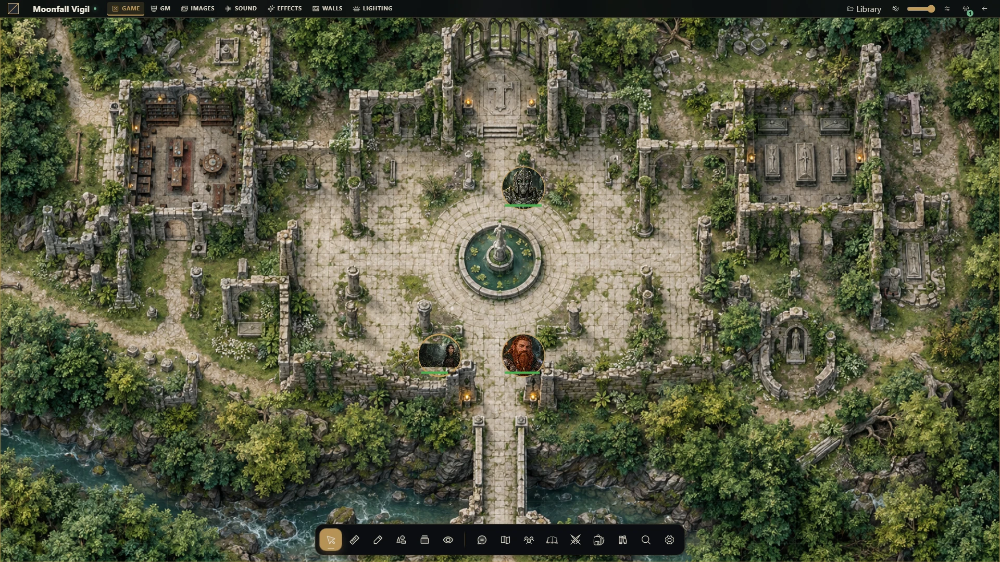
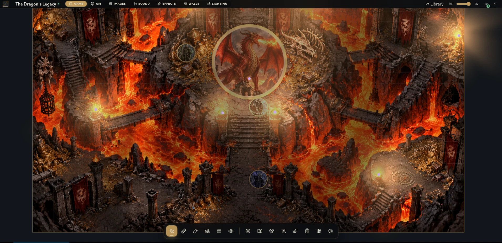
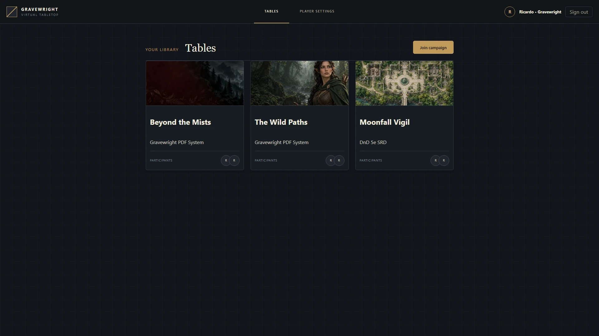
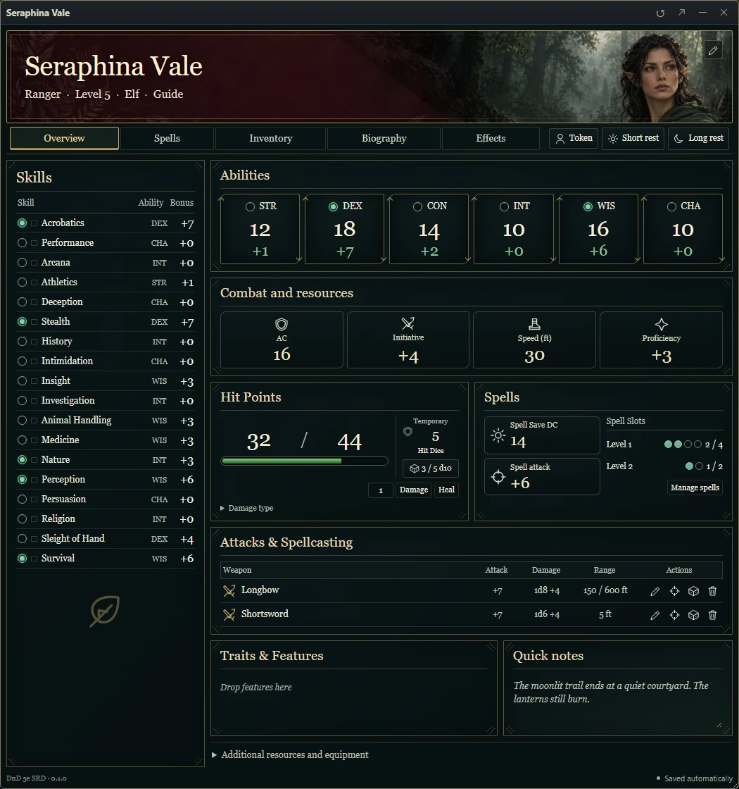
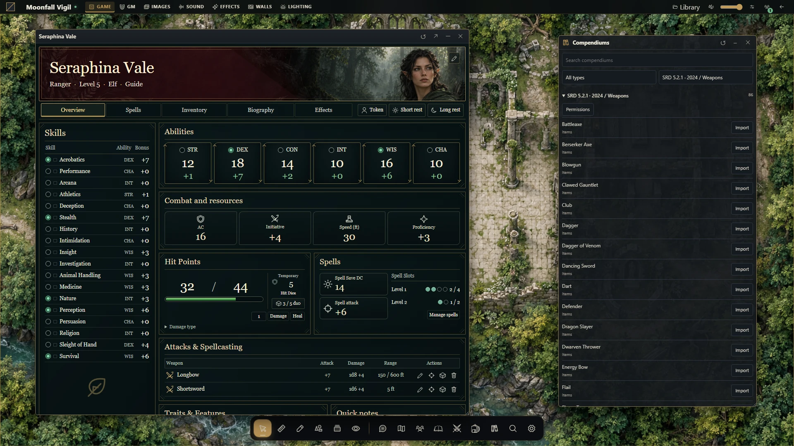

Reveal the world at your pace
Build scenes with walls, lighting and fog, then choose what the party sees.
Universal VTT · Free and open source · Alpha
Your world. Your players. Your next great session.
Available now: 0.2.2 Alpha · Windows x64 installer included
Your game, your tools · Independent systems, modules and PDF sheets
One table, many ways to play
Prepare the places your group will explore, organize its discoveries and set the mood for the next scene. Gravewright brings the shared tools of an RPG session together; installed systems provide their own sheets and rules.
Build scenes with walls, lighting and fog, then choose what the party sees.
Open dedicated system sheets, keep a character’s resources close and send rolls straight to chat.
Keep journals, quests and handouts alongside the places and people they belong to.
Roll dice, play audio, draw cards and follow combat without changing apps.
Gravewright in action · Real application footage
Explore Moonfall Abbey, move tokens, measure distances, open campaign notes and follow the next turn. The recording shows the real VTT in use, with a brief example of an optional system sheet.

Another world to exploreExpand the preserved Dragon’s Legacy battle scene.Prepare encounters, organize campaign notes and reveal the right scene when the party arrives.
Join your GM’s hosted table through the browser, open your sheet and play together.
Keep your characters, places and shared discoveries together between sessions.
Your characters, at hand
Bring a familiar PDF with the Gravewright PDF System, or choose a compatible system with its own sheets. Connect characters to tokens and keep their details within reach while you play.
The latest Alpha
Gravewright 0.2.2 Alpha expands the shared tabletop: native item windows, faster access to compendiums and a combat framework for independent systems. Prepare your campaign and choose the extensions that fit the way you play.
Available release ↗
Keep characters, items, journals and compendiums close to the table. Search campaign content and drag supported documents where you need them.
Use mapped PDFs or dedicated system sheets. Installed systems define their own fields, calculations and saving behavior.
Track initiative and turns beside the scene. Installed systems can add their own resources, effects and combat rules.
Translator 0.1.2 offers Portuguese and Spanish interface catalogs. Each player keeps their own language preference.
Start your campaign
Download Gravewright, run the Windows installer and create your first table in the browser. Use the generated Runner whenever you are ready to play.
Windows 10 (1803+) or Windows 11 · x64 · Browser with WebGL
Extract the complete ZIP into a writable folder. Keep its files together.
Open Install Windows.bat and choose your settings. The installer downloads the tools it needs.
Open Gravewright Runner.bat, create your administrator account and start preparing your campaign. Keep the Runner open while you play.
More ways to host
Prefer a server or a source checkout? Use Python 3.14 or newer and uv. The commands below use a POSIX shell and keep your existing configuration.
git clone https://github.com/Gravewright/gravewright.git
cd gravewright
uv sync --locked
cp -n .env.example .env
uv run --locked python manage.py migrate
uv run --locked python main.pyA universal table, shaped by you
Gravewright provides the tabletop. Independent systems bring game-specific sheets and rules; modules add tools such as translations and 3D dice. Use a compatible system or mapped PDFs for your group’s game, and build your own extensions through the documented API.
Choose English, Brazilian Portuguese or Spanish for your interface. The official translation API also serves compatible systems and modules.
Explore the module ↗See supported rolls as 3D dice and customize their colors, text and appearance.
Explore the module ↗Optional system example · Available in the Marketplace
DnD 5e SRD is one independent system you can install in Gravewright. It adds dedicated sheets, licensed compendiums and supported automations for the 2014 and 2024 rules.
Partial SRD collections; compendium content is in English. Requires VTT 0.2.1+ and DnD 5e SRD Server Rules 0.1.0 for combat automation. Install both system packages from the Marketplace.


Gravewright’s core uses GPL-3.0-only with an Independent Module Permission. Independently written modules can use any license, including a proprietary one. See the licensing policy for the full terms.
Read the licensing policy ↗Before you start
Gravewright is a universal VTT. Use a compatible system extension for dedicated sheets and automations, or map PDF sheets for your group’s game. Available rules support depends on the system you install.
Yes. Gravewright is free and open source. You host your installation and keep control of your campaign files. Third-party modules have their own licenses and terms.
Players join a shared server through their browser. The Windows Runner starts locally; use the hosting guide to make your installation available to your group.
Install Translator from the Marketplace and activate its languages. Each user can choose English, Brazilian Portuguese or Spanish. Documents and text written by your group keep their original language.
Your campaigns stay on your host. The default Windows installation stores the database and uploaded media in the application folder; you can configure other locations. Stop the Runner and back up the database, media, configuration and installed extensions before an upgrade.
Yes. Gravewright 0.2.2 Alpha is available now with the Windows installer. Systems and modules are installed separately. Keep backups of important campaigns and read the release notes before upgrading.
Yes. Install the system and its Server Rules companion from the Marketplace on VTT 0.2.1 or newer. Choose the 2014 or 2024 rules profile. It includes dedicated sheets and partial licensed SRD collections; it does not include every D&D book or official artwork.
Yes. Gravewright supports custom systems and modules with documented APIs. Install extensions from creators you trust; browser modules run inside the table page.
Built with the community
Tell us how Gravewright works at your table. Share an idea, report a problem or help improve translations, accessibility and documentation. Developers can also contribute to the core or create their own modules.
Make room for your next adventure